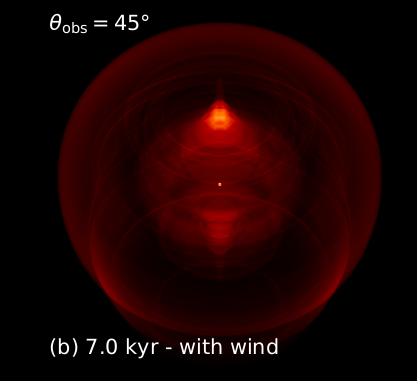

|
Classical, large scale 3D MHD simulations of interacting pulsar wind nebulae
Meyer D. M.-A., Torres D. F
|
 3D magnetic field lines and supernova ejecta distribution in the pulsar wind nebula of a defunct static massive star
3D magnetic field lines and supernova ejecta distribution in the pulsar wind nebula of a defunct static massive star |
Magnetized rotating neutron stars, or pulsars, are a possible end product of massive star evolution. Their relativistic wind
successively interacts with the supernova ejecta of their defunct progenitor, then with the circumstellar medium of the progenitor, and
eventually with the interstellar medium. The distribution of those materials governs the morphology, mixing of chemical elements,
and emission properties of the shocks present in plerionic supernova remnants.
If a massive star is static with respect to its ambient medium, then its resulting circumstellar medium is elongated along the
direction of the local magnetic field, and its supernova remnant transiently appears as a rectangle. The pulsar wind nebula forming
in it is, in its turn, elongated, as long as the pulsar’s axis of rotation matches the direction of the local magnetization. In this work,
we explore how the angle between the direction of the local magnetic field of the interstellar medium and the pulsar axis of rotation
influences the shaping of its pulsar wind nebula.
Three-dimensional magneto-hydrodynamic simulations are carried out with the PLUTO code to model the pulsar wind
nebula formed by a static pulsar inside of a supernova remnant left behind by a massive Wolf-Rayet-evolving progenitor at rest in an
organized, magnetized ambient medium. We use those models to perform radiative transfer calculations to derive non-thermal radio
emission maps of the pulsar wind nebulae.
When the polar elongation of the pulsar develop, they bend in opposite directions under the effects of the cavity carved by
the stellar wind and already filled by supernova ejecta. This induces a complex distribution of magnetized supernova ejecta and pulsar
wind, resulting in various observable structures, appearing as rectangles, circles, or irregular oblong shapes, in the radio waveband.
The angle between the direction of the pulsar rotation axis and that of the local ambient magnetization is a governing
parameter for the shaping and non-thermal radio properties of the pulsar wind nebulae of static massive stars; however, the mixing of
material, once the pulsar wind nebula is old (50−80 kyr), is not strongly affected by that factor
|
Runaway pulsars in core-collapse supernova remnants
Meyer D. M.-A., Meliani Z., Torres D. F
|
|
Magnetic field lines structure of a pulsar wind nebula |
Pulsars are, together with stellar mass black holes, the end product of the evolution of
massive stars. The core-collapse explosion of their progenitor star kicks them to high
speed bulk motions shaping their interacting winds with their ambient medium into a bow
shock nebula. When the moving pulsar is still young, its local surroundings is constituted
of the supernova remnant produced by the explosion of its progenitor massive star.
We investigate the role of the evolution history of massive stars into the bow shock nebula
of the runaway pulsar produced by the supernova and how this effects the non-thermal radio
emission of the entire plerionic remnant.
We perform a global three-dimensional magneto-hydrodynamical simulation of the pulsar wind
nebula generated by a fast-moving magnetised neutron star inside of the supernova remnant of
a defunct red supergiant star and derive from it non-thermal radio emission.
We found that the pre-supernova circumstellar medium of the supernova progenitor couples to
the runaway motion of the pulsar, inducing morphological asymmetries in its bow shock nebula
which translate into changes in its projected radio emission.
The understanding of the bow shock wind nebulae of young runaway pulsars requires the detailed
knowledge of their parent environment, and, therefore, the comprehension of the past stellar
evolution history of their massive progenitor star.
|
Material mixing in pulsar wind nebulae of massive runaway stars
Meyer D. M.-A., Torres D. F
|
|
Mixing of material in a pulsar wind nebula |
Pulsar wind nebulae often exhibit a wide range of X-rays and/or radio emission patterns influenced by their morphologies. In
this study we quantitatively examine the manner pulsar wind, supernova ejecta and defunct stellar wind materials distribute
and melt together into plerions. We performed 2.5-dimensional magneto-hydrodynamical simulations of the entire evolution of
the stellar surroundings. Different scenarios are explored, whether the star dies as a red supergiant and Wolf-Rayet supernova
progenitors, and whether it moved with velocity 20 km/s or 40 km/s through the ISM. Within the post-explosion, early 10 kyr,
the red supergiant wind only mixes by ⩽ 20%, due to its dense circumstellar medium filling the progenitor’s bow shock trail,
still unaffected by the supernova blastwave. Wolf-Rayet materials distribute circularly for the 35 M⊙ star moving at 20 km/s
and oblongly at higher velocities, mixing efficiently up to 80%. Supernova ejecta remain spherical for longer times at 20 km/s
but form complex patterns at higher progenitor speeds due to earlier interaction with the bow shock, in which they mix more
efficiently. The pulsar wind mixing is more efficient for Wolf-Rayet (25%) than red supergiant progenitors (20%). This work
reveals that the past evolution of massive stars and their circumstellar environments critically shapes the internal distribution of
chemical elements on plerionic supernova remnants, which is essential for interpreting observations. Particularly, such factor
must be taken into account to explain observation of pulsar wind nebulae.
|
Pulsar wind nebulae meeting the circumstellar medium of their progenitors
Meyer D. M.-A., Meliani Z., Torres D. F
|
|
MHD pulsar wind nebula model of a runaway massive star |
A significative fraction of high mass stars sail away through the interstellar medium of the galaxies. Once they evolved and died via a core collapse supernova, a magnetized, rotating neutron star (a pulsar) is usually their leftover. The immediate surroundings of the pulsar is the pulsar wind, which forms a nebula whose morphology is shaped by the supernova ejecta, channeled into the circumstellar medium of the progenitor star in the pre supernova time. Consequently, irregular pulsar wind nebulae display a large variety of radio appearances, screened by their interacting supernova blast wave or harboring asymmetric up down emission. Here, we present a series of 2.5 dimensional non relativistic magnetohydrodynamical simulations exploring the evolution of the pulsar wind nebulae generated by a red supergiant and a Wolf Rayet massive supernova progenitors, moving with Mach number M eq. to 1 and M eq. to 2 into the warm phase of the galactic plane. In such a simplified approach, the progenitors direction of motion, the local ambient medium magnetic field, the progenitor and pulsar axis of rotation, are all aligned, which restrict our study to peculiar pulsar wind nebula of high equatorial energy flux. We found that the reverberation of the termination shock of the pulsar wind nebulae, when sufficiently embedded into its dead stellar surroundings and interacting with the supernova ejecta, is asymmetric and differs greatly as a function of the past circumstellar evolution of its progenitor, which reflects into their projected radio synchrotron emission. This mechanism is particularly at work in the context of remnants involving slowly moving or very massive stars. We find that the mixing of material in plerionic core collapse supernova remnants is strongly affected by the asymmetric reverberation in their pulsar wind nebulae.
|
On the plerionic rectangular supernova remnants of static progenitors
Meyer D. M.-A., Meliani Z., Velazquez P. F., Pohl M., Torres D. F
|
|
Rectangular plerionic supernova remnants |
Pulsar wind nebulae are a possible final stage of the circumstellar evolution of massive stars, where a fast-rotating, magnetised neutron star produces a powerful wind that interacts with the supernova ejecta. The shape of these so-called plerionic supernova remnants is influenced by the distribution of circumstellar matter at the time of the explosion, itself impacted by the magnetic field of the ambient medium, responsible for the expansion of the circumstellar bubble of the progenitor star. To understand the effects of magnetization on the circumstellar medium and resulting pulsar nebulae, we conduct 2D magneto-hydrodynamical simulations. Our models explore the impact of the ISM's magnetic field on the morphology of a supernova remnant and pulsar wind nebula that develop in the circumstellar medium of massive star progenitor in the warm phase of the Milky Way's ISM. Our simulations reveal that the jet-like structures formed on both sides perpendicularly to the equatorial plane of the pulsar, creating complex radio synthetic synchrotron emissions. This morphology is characterized by a rectangular-like remnant, which is typical of the circumstellar medium of massive stars in a magnetized medium, along with the appearance of a spinning top structure within the projected rectangle. We suggest that this mechanism may be partially responsible for the complex morphologies observed in pulsar wind nebulae that do not conform to the typical torus/jet or bow shock/tail shapes observed in most cases.
|
Pulsar wind nebulae of runaway massive stars
Meyer D. M.-A., Meliani Z.
|
| 
Synchrotron image of a pulsar wind nebulae from a runaway progenitor |
A significant fraction of massive stars move at speed through the interstellar medium of galaxies. After their death as
core collapse supernovae, a possible final evolutionary state is that of a fast rotating magnetised neutron star,
shaping its circumstellar medium into a pulsar wind nebula. Understanding the properties of pulsar wind nebulae
requires knowledge of the evolutionary history of their massive progenitors. Using 2.5D magnetohydrodynamical
simulations, we demonstrate that, in the context of a runaway high mass red supergiant supernova progenitor, the
morphology of its subsequent pulsar wind nebula is strongly affected by the wind of the defunct progenitor star
preshaping the stellar surroundings throughout its entire past life. In particular, pulsar wind nebulae of obscured
runaway massive stars harbour asymmetries function of the morphology of the progenitors wind blown cavity,
inducing projected asymmetric up down synchrotron emission.
|
Credit image : NASA
|
|